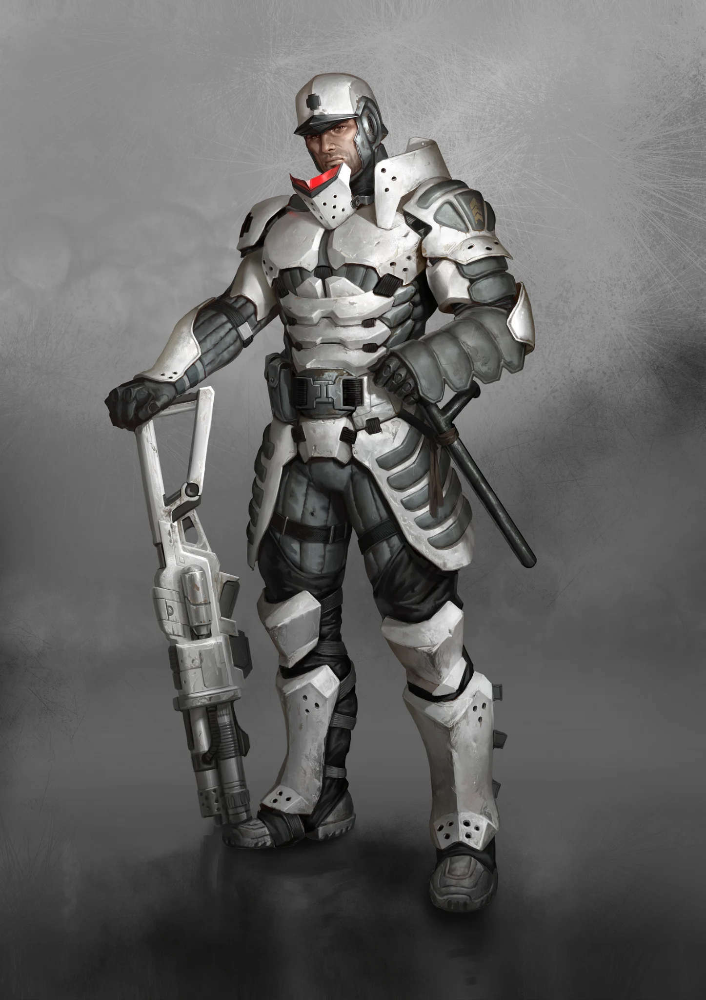

Leaders
- Corps Commander
- Territorial Region I: Montovan
- Territorial Region II: Unknown
- Territorial Region III: Verhoest
- Territorial Region IV: Bianchi
CULT DOSSIER
The Brotherhood of Arms
+1 to maximum skill level

THE CULT
The Hellvetics are the surviving military tradition of old Switzerland, entrenched within the Alpine Fortress and bound by the Doctrine. They see themselves as soldiers first: guardians of the mountain passages, defenders of the former Swiss heartland, and comrades whose survival depends upon discipline.
Their strength comes from more than superior weapons. A Hellvetic squad trains to move, shoot, communicate, and endure as one system. Ammunition is counted, equipment maintained, and mistakes remembered. In a world of warbands and improvised militias, the Hellvetics preserve something rare: a functioning professional army.
Their ancestors expected catastrophe and withdrew into the Alpine Fortress before the Eshaton, but preparation did not spare them. The Reaper's Blow tore through the mountains, rupturing tunnels, opening ravines, and driving magma through the underground complex. Soldiers sealed corridors, redirected lava, erected barriers, and rebuilt links between isolated sectors.
When Hellvetics emerged into the Swiss heartland, they found abandoned cities, scattered survivors, banditry, and communities suspicious of organized soldiers. The Doctrine nevertheless demanded protection of the population. Bandit strongholds were crushed, roads secured, and reconstruction began beneath Hellvetic guns.
Over time, tunnels were reopened, bridges restored, and routes beneath the Alps became some of Europe's safest passages. Protection became purpose, and passage became income.
The Doctrine gives the Hellvetics a purpose no surviving government can provide. It binds the soldier to weapon, Harness, comrades, and Hellvetica while demanding austerity and respect for the lives they protect.
Ammunition is precious because every cartridge requires resources and labor. A missed shot is therefore more than poor marksmanship; it is waste taken from the Fortress. Equipment receives similar reverence. A Harness protects only if maintained, and a Trailblazer remains trustworthy only if its soldier treats it as part of themselves.
The Doctrine is not scripture from a god. Conduct is measured against conscience, comrades, and the Doctrine itself. It grants enormous authority, but failure to live up to it can strip that authority away.
The Fortress is a vast military world carved through the Alps. Defensive corridors, transfer tunnels, rail lines, storage systems, radio relays, workshops, weapons positions, and sealed sectors connect four Territorial Regions.
Controlling these routes gives Hellvetica strategic importance far beyond its population. Travelers can cross mountains and the Reaper's Blow through passages protected by soldiers who know every firing position and demolition point.
Transit fees help keep the Fortress alive. Hellvetica lacks enough agriculture and natural resources to support its military, so passage, mercenary service, engineering, and other expertise are exchanged for food, Petro, equipment, and supplies.
Hellvetics are recruited from their own ranks and the former Swiss population. Boys and girls train equally, with drills beginning around fourteen. Those who prove themselves receive a Trailblazer assault rifle intended to remain with them throughout their service.
Losing, selling, or irreparably damaging that weapon can end a soldier's place in the Cult. The Trailblazer is not ceremonial: it is standardized, maintained, familiar, and tied directly to Hellvetic ammunition and tactics.
Harnesses receive the same care. Their modules help soldiers survive heat, carry loads, communicate, or endure battle. Weapon, armor, training, and unit are designed to function together.
Hellvetics specialize extensively. Grenadiers are the archetypal field troops, combining precise rifle fire with survival training. Sappers handle demolitions and heavy weapons. Sentinels guard passages, operate defenses, and police the Fortress.
Spotters observe enemy movement across mountains and ruins. Radio Beam Units maintain the communications network connecting distant regions. Medics fight beside the troops they treat, while Genies build bridges, repair tunnels, and maintain vehicles. Foragers control supplies and act as quartermasters and technicians.
Exceptional personnel may enter Special Detachments for politically sensitive missions. Others become Infiltrators, hiding their equipment beneath local clothing while gathering intelligence and preparing sabotage.
Hellvetica remains a strict military hierarchy. Soldiers rise into noncommissioned leadership before officers command platoons, units, and sections. Subalterns lead formations and represent Hellvetica abroad, while Field Officers assist in governing Territorial Regions.
At the top stand four Corps Commanders, one for each Territorial Region. They can mobilize units, close passages, order construction, and shape policy within their commands.
Conditions differ sharply by region. Some sections defend the traditional heartland, others push infrastructure through former Austria, while eastern reaches toward Purgare and the Balkhan remain thinner and more exposed.
Hellvetica's position between regions could have made it the military arm of another Cult. Instead, the Hellvetics guard their neutrality and reject alliances that could compromise control of the passes.
Neutrality does not mean passivity. Troops may be hired when the Fortress needs resources, but the Doctrine limits what they will do. Hellvetics question questionable orders and may refuse operations they consider dishonorable, while defending an endangered settlement is difficult to reject.
Large wars between Cults or city-states are generally avoided. Every unnecessary commitment spends soldiers and ammunition that exist first to protect Hellvetica.
The people Hellvetica protects do not always want military guardianship. Prosperity allowed old cantonal identities to return, and communities increasingly questioned why soldiers still expected obedience centuries after the government they once served disappeared.
Hellvetica withdrew from much of the cantons, leaving local populations to govern and defend themselves while retaining roads, way stations, tunnels, and strategic positions. The Doctrine promises protection, yet the military often assumes it knows what protection requires.
Project 26 represents the harder edge of this contradiction. P-26 cells infiltrate resistant cantons, manipulate opinion, sabotage opponents, and remove dangerous leaders in pursuit of a restored Hellvetic Confederation. The same army sworn to shield the population can therefore work secretly against citizens who reject its authority.
Hellvetics offer stability in a world that has forgotten how professional institutions work. Their tunnels connect regions, their engineers rebuild what others abandon, and their soldiers can defend civilians against threats that would destroy ordinary militias.
Yet discipline can become rigidity. Protection can become paternalism. Neutrality can become an excuse to ignore suffering beyond the Fortress, while devotion to an ancient mission can justify interference in communities that no longer accept it.
A Hellvetic is taught that survival depends upon the comrade beside them, the weapon in their hands, and the Doctrine that keeps thousands acting as one.
Every Hellvetic must eventually decide whether duty means obeying the system that preserved Hellvetica, or preserving the principles that system was created to serve.
THE ARMY
Hellvetica combines a central command ladder with specialist branches. Select any rank to read its full entry.
DOCTRINE & DISCIPLINE
FORTRESS ISSUE
Open or close each equipment group to focus the reference.